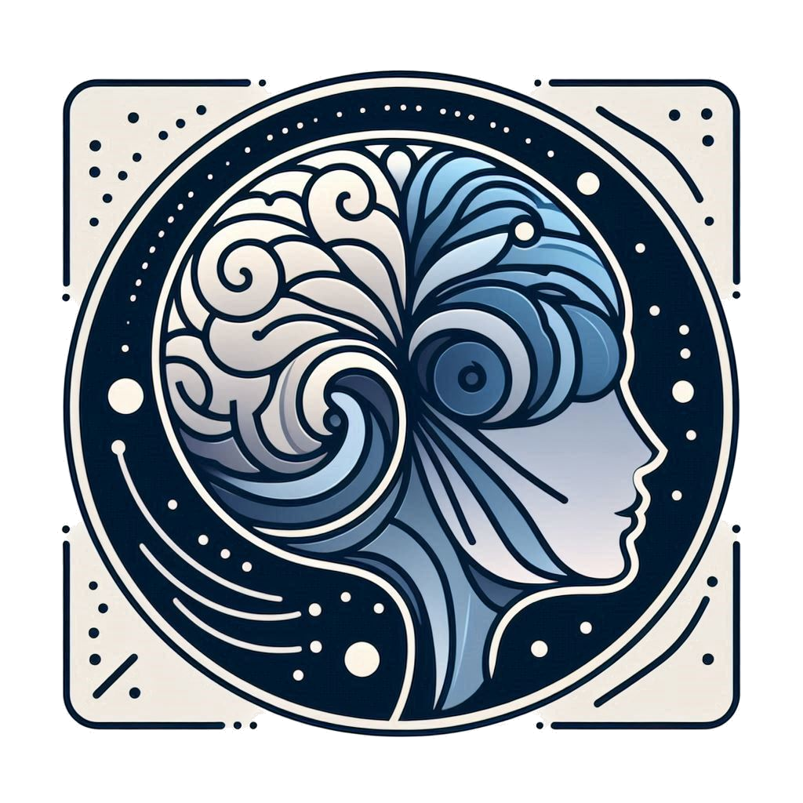
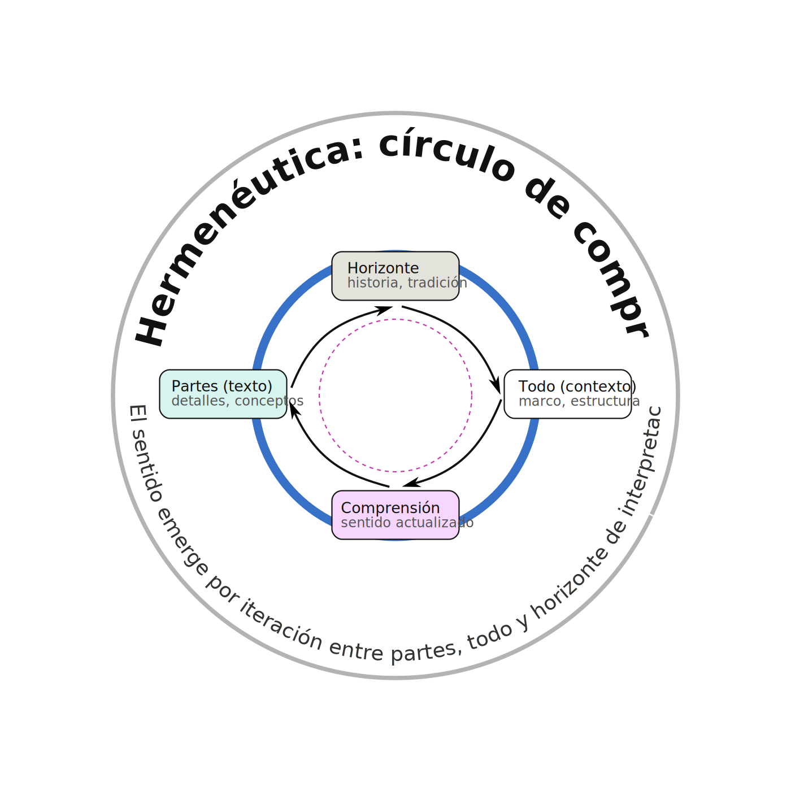
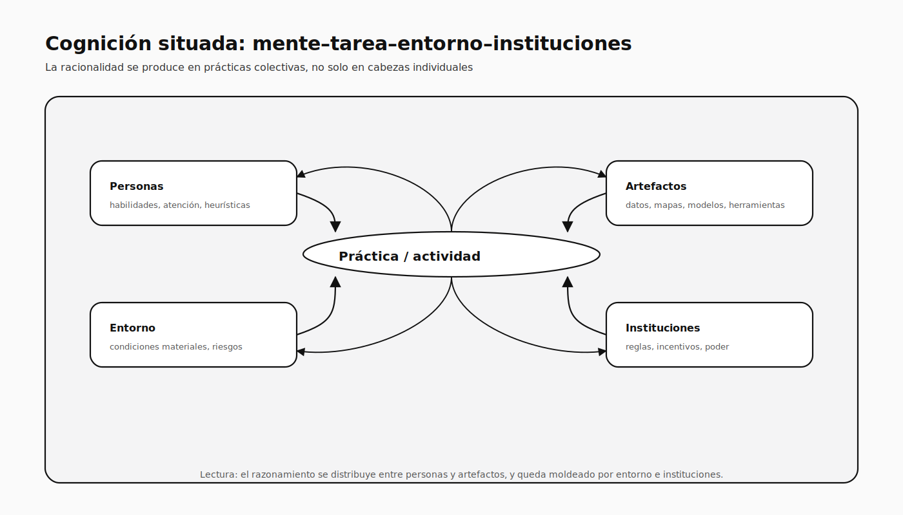
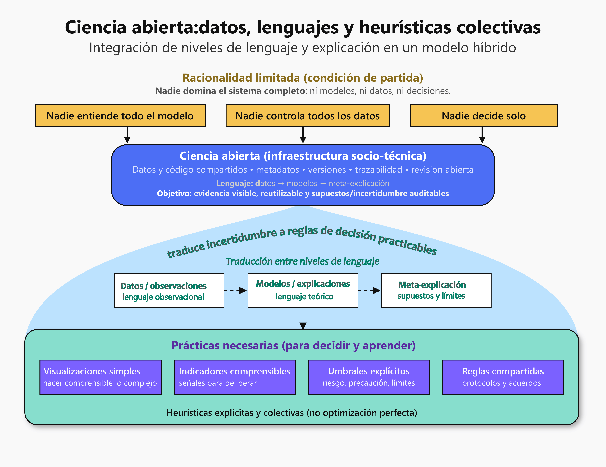

Contraste de epistemologías
Diseño de estudios y experimentos
 Fundamentos del ideal científico
Fundamentos del ideal científico
≈15 min
Pregunta guía:
¿Qué promete la ciencia moderna?
Objetivo didáctico: Mostrar que la ciencia moderna nace de supuestos fuertes, no de neutralidad pura.
🧠 Mensaje clave: La ciencia no empieza sin filosofía; empieza con filosofía implícita.
Bacon y la ciencia occidental
- Sir Francis Bacon (1561-1626) clave en el origen de la ciencia occidental.
- En su Novum Organum (1620) plantea substituir el ya entonces viejo método aristotélico (dominate por más de 1800 años), por un nuevo órgano basado en el estudio inductivo de la naturaleza.
- Intentaba:
- Iniciar una reconstrucción total de las ciencias, las artes prácticas y todo el conocimiento humano, erigida sobre fundamentos apropiados .
- Propone el método de experimentación .
- Concibe que la manipulación deliberada de variables debería reemplazar el limitado empirismo prevaleciente que consistía en “observar y nombrar”.
Consecuencias baconianas
Consecuencias positivas y negativas de La reconstrucción baconiana sobre la concepción de ciencia iniciadas hace 400 años y que prevalecen hasta hoy.
El ideal baconiano de ciencia consiste en lo siguiente:
Al principio de su investigación, los experimentadores habrán de eliminar de sus pensamientos “todos los ‘ídolos’ o ilusiones seculares y las falacias nacidas de las idiosincrasias personales, de sus juicios o de las creencias tradicionales y de los dogmas de su grupo”.
En la visión baconiana, las observaciones se realizan en una forma puramente objetiva por individuos que no tienen lealtad alguna a ninguna hipótesis o creencia que les pueda causar ceguera hacia alguna porción de la evidencia empírica.
Las conclusiones correctas y los principios explicativos emergen de las pruebas en una forma relativamente automática y sin que los preconceptos filosóficos del experimentador jueguen papel alguno.
La naturaleza misma dictaría sin ambigüedades, por así decirlo, la adopción de teorías verdaderas. El conjunto total de las ciencia, pensaba, sería puramente objetivo, empírico y racional.
Bacon hoy….
Aunque esta visión de la ciencia todavía está presente en algunos círculos, es claro que tiene defectos serios.
- Inevitalemente los juicios personale tienen un papel en la ciencia.
- En gran parte juegan un papel creativo fundamental.
- Están presentes a cada paso de la creación científica
- Se involucran en el complicado proceso inductivo
- No los podemos excluir de la forma como explicamos los hallazgos
- No debemos minimizar las jugarretas que nuestra propia psique nos puede jugar.
- Existe, por ejemplo, el llamado efecto de disponibilidad (¡usamos los conceptos que tenemos a la mano!).
- No existe un proceso lógico riguroso para concebir teorías
- No hay reglas fijas para idear nuevos conceptos
“Legalidad” de la naturaleza
Esta noción, que posiblemente sea un corolario de una suposición filosófica más básica, implica la creencia de que los eventos de la naturaleza presentan cierto apego a reglas y es indudablemente un prerrequisito necesario para la ciencia.
Esta suposición permite que la tarea de catalogar y entender las regularidades de la naturaleza sea concebible.
Corolarios: comprensibilidad, uniformidad, causalidad
- La naturaleza es comprensible . Einstein afirmaba que: la cosa más incomprensible del universo es que sea comprensible.
- La naturaleza es uniforme . Es decir los procesos y patrones observados sólo en una escala limitada se mantendrán universalmente (esto es obviamente imprescindible en ciencias como la Astronomía).
- ¿Qué pasa con este supuesto en ciencias como la Ecología, la Psicología o las Ciencias sociales? De paso, hay que notar que este supuesto implica la homogeneidad del material experimental.
- La causalidad existe . El principio de causalidad es la noción que consiste en que “cada evento (o fenómeno) natural se supone tiene una causa, de modo que si tal situación causal puede ser restituida, el evento será duplicado” (Underwood1957).
Vamos al siguiente bloque
 El problema de la causalidad
El problema de la causalidad
≈20 min Pregunta guía:
¿Qué significa decir que algo causa algo?
Objetivo didáctico: Separar claramente:
- correlación ≠ causalidad
- causalidad ≠ determinismo simple
🧠 Mensaje clave: La causalidad no desaparece, pero ya no es ingenua.
¿Hasta qué punto el diseño puede ‘rescatar’ la causalidad?
Causalidad y los empiristas
- La posición del filósofo empirista escocés David Hume (1711-1776) tuvo un inmenso peso durante mucho tiempo.
- Hume sostenía que la inferencia de relaciones de causalidad entre inobservables carece siempre de justificación lógica:
- Lo que observamos no es un evento causando a otro, sino la correlación entre sus desarrollos .
- En consecuencia, la correlación entre eventos es todo lo que podemos conocer acerca de la causalidad.
Interpretaciónes causales
Para los filósofos empiristas es indispensable que las causas y los efectos ocurran en “constante conjunción” , es decir que la causa es necesaria y suficiente para el efecto.
Naturalmente se concebia que la causalidad en ciencia documentaba procesos deterministas.
¿Sigue siendo esta nuestra convicción o habrá cambiado?
1. ¿Cómo debe interpretarse esto?
Participa: vevox.app ID: 144-565-419
- 90% de las semillas en un grupo tratado germinan.
- 20% lo hacen en el grupo control.
Elije la respuesta que consideres más apropiada

¿Puede haber causalidad sin metafísica?
Positivismo
Las ideas de Hume permean en el positivismo del siglo XIX de Auguste Comte (1798-1857), que empujó al quehacer científico bajo su influencia a tomar una actitud temerosa para proponer relaciones causales como base de la construcción de hipótesis.
En lugar de causas, se buscan relaciones funcionales entre observables o entre términos teóricos, cada uno de los cuales es definido operativamente por un instrumento de medición o conjunto de operaciones en un estudio.
Causalidad en crisis
Durante los últimos 50 años han emergido toda una gama de posiciones en relación con lo que se entiende al decir que un evento causa a otro
También se ha cestionado si reaalmente podemos adquirir conocimiento acerca de una relación causal.
Cook y Campbell (1979) afirmaban hace tiempo que “la epistemología de la causalidad y de los métodos científicos más en general, atraviesaba por un productivo estado de casi caos”.
¿Habremos superado ya esta compleja encrusijada?
Actualmente se acepta que la causalidad puede tomar una forma probabilística .
Judea Pearl y Dana Mackenzie publicaron en 2018 The Book of Why: The New Science of Cause and Effect.
2. ¿Qué tan de acuerdo estás con la siguiente aseveración?
Participa: vevox.app ID: 144-565-419
“La causalidad implica correlación”
Causalidad hoy…
Estas perspectivas de la causalidad actualmente se reconocen limitadas.
La causalidad se considera ahora como algo diferente de la mera correlación .
Esto puede ser confuso en el uso de técnicas estadísticas que lo mismo se aplican para establecer correlación que para hablar de causas.
La fuerza con la que podemos apoyar una relación como causal, depende críticamente de la naturaleza del diseño empleado y no del modelo estadístico empleado .
Gama de relaciones causales
Hay toda una gama de posibilidades acerca de los tipos de relaciones de causalidad que pueden ser descubiertas a través de la experimentación.
El suponer el principio de causalidad significa adoptar el determinismo como un paradigma de trabajo en el laboratorio y en el campo.
Debe notarse que en cualquier situación hay toda una variedad de niveles en los que puede conducirse un análisis causal. Tanto la naturaleza como la ciencia están estratificadas .
Por ejemplo si apago la luz en una habitación ¿cuál es el conjunto de posibles escenarios causales?
Causalidad y realidad (realismo vs positivismo)
- Nos queda meditar el significado de las relaciones de causalidad descubiertas.
- Para los realistas (¡en el sentido filosófico!), se trata de un logro en el camino de la búsqueda de la verdad acerca de mecanismos ocultos, pero reales, cuyas propiedades y relaciones explican los fenómenos observables.
- Un físico positivista diría solamente que un globo se encoge como una función del tiempo.
- Un físico realista agregaría que la pérdida de moléculas de gas causaron el encogimiento observado.
- Es decir, no se trata sólo de una relación causal construida en la mente del físico, se trata de que existe una relación causal real entre las entidades fuera de la mente humana:
- “Las aseveraciones teóricas tienen un contenido objetivo que puede ser cierto o falso”.
Causalidad finita
La ciencia no sólo presupone que hay causas naturaleza de los eventos , sino también que esas causas son finitas en número y que pueden ser descubiertas.
La ciencia se construye sobre la convicción de que la generalización de algún tipo es posible . Es decir, no es necesario reproducir el prácticamente infinito número de elementos que operan cuando un efecto es observado inicialmente, a fin de tener una causa suficiente para volver a producir el efecto.
Si la ciencia es posible, debemos suponer que el efecto de un factor no depende de todos los posibles niveles de todas las otras variables presentes cuando se efectúa la observación.
Causalidad finita y desprecio…
- Para Bachelard, uno de los signos distintivos del espíritu científico y del espíritu filosófico es el derecho a despreciar . Para él, el espíritu científico explicita clara y distintamente este derecho a despreciar lo despreciable
- Derecho que incansablemente el espíritu filosófico le rehúsa.
- Para ilustrar esto, recurre a Ostwald:
- “Cualquiera que sea el fenómeno considerado, siempre hay un número extremadamente grande de circunstancias que no tienen influencia mesurable sobre él”.
- ¿Cómo influye el color de un proyectil en sus propiedades balísticas?
3. ¿Conoces alguna metodología científica para describir y analizar estructuras de relación causa efecto?
Participa: vevox.app ID: 144-565-419
Vamos al siguiente bloque
 Simplicidad, complejidad y límites
Simplicidad, complejidad y límites
≈10 min Pregunta guía:
¿Hasta dónde puede simplificar la ciencia?
Objetivo didáctico: Preparar el terreno para aceptar límites sin abandonar rigor.
🧠 Mensaje clave: La ciencia necesita simplificar, pero no puede creerse simple.
Simplicidad…
- Muchos científicos, particularmente los físicos, enfatizan la importancia de la fuerte creencia en la simplicidad última de las leyes científicas.
- Albert Einstein escribió alguna vez
- “Nuestras experiencias nos justifican al creer que la naturaleza es la realización de las ideas matemáticas más simples concebibles”.
- Sin embargo, como cualquier ecólogo sabe, hay una enorme complejidad en los sistemas vivientes, lo que puede hacer cuestionable o por lo menos dificultar grandemente el empleo de modelos simples.
…Simplicidad…
- Una buena guía a seguir la encontramos en las palabras del científico Alfred North Whitehead:
- “Busca la simplicidad y desconfía de ella”
- El mismo autor afirmaba que la ciencia tiene como meta
- “Buscar la explicación más simple de hechos complejos, tratando al mismo tiempo de evitar el error de concluir que la naturaleza es más simple de lo que realmente es”.
¿Cuándo es que simplificar se vuelve engañoso?
Vamos al siguiente bloque
 Crisis del ideal positivista
Crisis del ideal positivista
≈10 min Pregunta guía:
¿Por qué el positivismo deja de ser suficiente?
Objetivo didáctico: Mostrar que la crisis es:
- epistemológica,
- social,
- política.
🧠 Mensaje clave: La crisis no es “anti-ciencia”, es anti-simplificación excesiva.
📌 Slide bisagra (discusión): crítica posmoderna
¿La crítica posmoderna debilita o fortalece a la ciencia?
Ciencia en Problemas
- Al inicio del siglo XXI la profesión científica enfrenta serios problemas en relación con su postura pública y credibilidad.
- Crisis del posmodernismo. En todas las esferas culturales (arte, literatura, diseño)
- La idea de un estilo superior y las ideas de avance y progreso están siendo cuestionadas
- El pluralismo y la multiplicidad son preferidos.
- La condición posmodernista implica una pérdida de aprecio a la autoridad.
- Existe también una crisis del determinismo (Lyotard, 1984)
Fuente: Yearley, S. (2005). Making sense of science (understanding the social study of science). Sage. London, 205 pp.
Verdades posmodernistas
- El oficio de la ciencia es construir y defender representaciones de la realidad.
- Irónicamente, el mismo éxito y alto perfil social de la ciencia la han abierto a la reconstrucción y al escepticismo.
- La ciencia es cada vez más y más una necesidad, pero al mismo tiempo, es menos y menos suficiente para la definición socialmente aglutinadora de verdad (Beck, 1992).
Fuente: Yearley, S. (2005). Making sense of science (understanding the social study of science). Sage. London, 205 pp.
Vamos al siguiente bloque
 Racionalidad humana real
≈20 min Pregunta guía:
¿Cómo decidimos realmente?
Objetivo didáctico: Desplazar la pregunta:
¿Somos racionales?
hacia ¿Qué tipo de racionalidad es posible?
🧠 Mensaje clave: La racionalidad no es defectuosa; es situada y distribuida.
Punto de partida histórico
- Lógica clásica → certeza
- Probabilidad moderna → incertidumbre
- Ciencia como cálculo del comportamiento humano
“La probabilidad es sentido común reducido a cálculo”
El proyecto positivista (Comte 1798-1857)
- Leyes empíricas universales
- Ciencia como base del orden social
- Supresión de la metafísica
- Sociedad como objeto gobernable
Supuesto fuerte:
la ciencia puede gobernar a la sociedad
Ideal positivista de la racionalidad
- Racionalidad universal
- Formalización matemática
- Predicción y control
- Neutralidad del observador

Racionalidad limitada
- Información incompleta
- Tiempo y capacidades finitas
- Decisiones satisfactorias
- Uso sistemático de heurísticas
- La racionalidad se vuelve empírica

Heurísticas y sesgos
- Reglas simples de decisión
- Funcionan rápido
- Producen errores sistemáticos
- No son anomalías individuales
¿Fallamos al razonar?
Dos interpretaciones:
- Sesgos → desviaciones del modelo normativo
- Heurísticas → adaptaciones a entornos reales
- El error se vuelve estructural

Límite del positivismo clásico
El modelo normativo:
- Describe mal cómo decidimos
- Ignora valores y poder
- No resuelve conflictos sociales
Pregunta clave:
¿Quién define qué es racional?
Enfoques no positivistas
Tres críticas convergentes:
- La intención importa
- La experiencia importa
- El poder importa
- La racionalidad no es solo cálculo
Hermenéutica
- Comprensión como proceso iterativo
- Lenguaje, historia, tradición
- Decisión como interpretación


Cognición encarnada - Fenomenología
- Cuerpo y mente inseparables
- Percepción–acción unificadas
- Conocimiento como experiencia


Cognición situada
- Saber inseparable de la acción
- Contexto, cultura y ambiente
- Cognición como actividad integrada


Teoría crítica
- Racionalidad instrumental
- Orientada a eficiencia y control
- Modelos como tecnologías de poder

Síntesis epistemológica
| Enfoque | Racionalidad | Heurísticas |
|---|---|---|
| Positivismo | Mecanismo | Reglas |
| Hermenéutica | Comprensión | Prácticas |
| Fenomenología | Experiencia | Acción |
| Constructivismo | Producto social | Rutinas |
| Teoría crítica | Instrumento | Normalización |
Vamos al siguiente bloque
 Salida constructiva: ciencia hoy
Salida constructiva: ciencia hoy
≈15 min
Pregunta guía:
¿Cómo hacer ciencia y decidir hoy?
🧠 Mensaje clave: Usamos ciencia consciente de sus límites, no a pesar de ellos.
¿Fracasó el positivismo?
Respuesta corta:
💀 Como proyecto totalizante
🗽 Como infraestructura científica
La paradoja
El positivismo fracasa
porque tiene demasiado éxito
Al medir y modelar:
- revela incertidumbre
- expone límites cognitivos
- muestra complejidad social
Emergencia de modelos híbridos
Aparecen cuando:
- la incertidumbre es alta
- los valores están en disputa
- las decisiones son urgentes
- el riesgo es colectivo
- La ciencia sola no basta
- La sociedad sola tampoco
¿Qué es un modelo híbrido?
La ciencia informa
la sociedad delibera
la decisión emerge de su interacción
No es:
- divulgación
- relativismo
- tecnocracia
Lógicas que se articulan
| Ciencia | Sociedad |
|---|---|
| Evidencia | Valores |
| Probabilidad | Experiencia |
| Modelos | Legitimidad |
| Predicción | Sentido |
Heurísticas colectivas diseñadas
Ejemplos:
- umbrales ecológicos
- semáforos de riesgo
- principio de precaución
- escenarios plausibles
- Racionalidad limitada institucionalizada
¿Sesgos o adaptaciones?
desafíos de la ciencia en crisis
La racionalidad limitada no se corrige, se organiza colectivamente.
- nadie entiende todo
- nadie controla todo
- nadie decide solo
- Heurísticas explícitas en lugar de una optimización perfecta
¿Quién debe decidir bajo incertidumbre?
Oferta de la Ciencia Abierta
- Evidencia como bien común
- Datos con supuestos visibles
- Incertidumbre explícita
- Heurísticas colectivas compartidas
- Aprendizaje adaptativo
- Infraestructura práctica para modelos híbridos ciencia–sociedad

¿Qué cambia respecto al positivismo de Comte?
- La ciencia ya no gobierna sola
- La racionalidad no es universal
- La incertidumbre no se elimina
- Los valores se hacen explícitos
- Pero la ciencia sigue siendo indispensable
Implicación final
Usamos herramientas positivistas
para decidir en un mundo no positivista
Para una reflexión en calma
Gobernar procesos bajo incertidumbre
no se resuelve sólo con aplicar modelos,
se requiere articular evidencia, valores y también las reglas prácticas de la cultura involucrada
4 ¿Cuáles son los aspectos CLAVE para diseñar un experimento/estudio?
Participa: vevox.app ID: 144-565-419